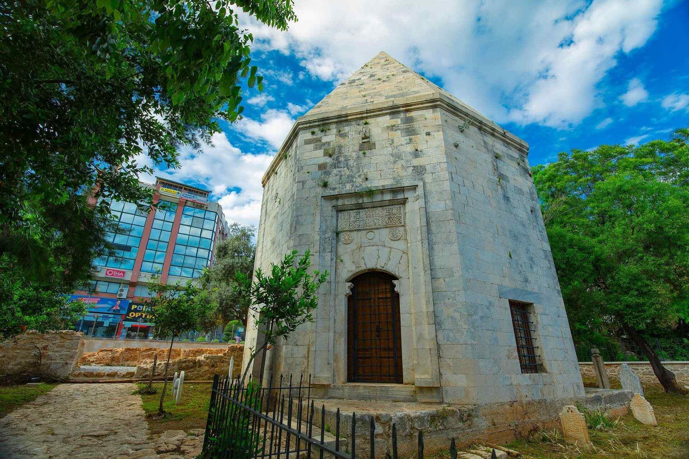

|  |
Türkiye’nin turizm başkenti Antalya’nın en turistik bölgelerinden Kaleiçi’nde bulunan Mevlevihane’nin binası Selçuklu Dönemi’ne ait. Kitabesi bulunmamakla birlikte Sultan Alâeddin Keykubad tarafından 1255 yılında inşa ettirildiği, Mevlevihane olarak ise 16. yüzyıldan itibaren kullanılmaya başlandığı düşünülüyor. Mevlevihane, Hamam, Zincirkıran Mehmet Bey ve Nigar Hatun türbelerinden oluşan bir yapı kompleksi olan müzede Mevlevilik hakkında bilgilendirme panoları, canlandırmalar, kıyafetler ve Mevleviliğe ait çeşitli eşyalar sergileniyor.
Aynı zamanda İslam Felsefesi ve düşüncesi dersleri, Mesnevi ve Divan okumaları, seminerler, tasavvuf müziği dinletileri, sema ayinleri gibi etkinliklere de sahne oluyor.Mevlevihane bölümünde kubbe ile örtülü ana mekân, sema gösterilerinin düzenlendiği yerdi. Yanlarında bulunan altı oda ise Mevlevi dervişleri tarafından kullanılıyordu. Mevlevihane Hamamı’nın yapım tarihi tam olarak bilinmese de planı ve boyutlarından anlaşılabildiği üzere kalabalık gruplara hizmet vermekten ziyade özel kullanım için 13. yüzyılda “Saray Hamamı” olarak inşa edildiği, Osmanlı Dönemi’nde ise Mevlevihane Hamamı olarak kullanıldığı düşünülüyor.
Yapı topluluğu içerisinde yer alan türbelerden birinde yatan Nigar Hatun, 2. Beyazıt’ın oğlu Sultan Korkut’un annesi. 1377 tarihli Türbe ise Antalya’yı liman zincirlerini kırarak almayı başarması nedeniyle “Zincirkıran” lakabı verilen Mehmet Bey tarafından 1377 yılında inşa ettirilmiştir. Türbede Mehmet Bey ile birlikte oğlu Ali ve Antalya Mevlevihanesi’nin Şeyhi Mustafa Dede Efendi’nin mezarları bulunur. Günümüz Türkiye topraklarının büyük bölümünü oluşturan Anadolu’da binlerce yıl boyunca farklı milletler ve dinler bir arada, barış içinde yaşamıştır. Karşılıklı hoşgörü ve saygı prensibi temelinde oluşturulan bu barış ve huzur ortamının sağlanmasında devlet politikaları ile birlikte dönemin düşünürleri ve kanaat liderlerinin payı olduğunu söylememiz gerekir.
Bu kişilerden biri 13. yüzyılda yaşamış Mevlana Celaleddin Rumi olup, ölümünün ardından hoşgörü ve sevgiye, birleştirme ve bütünleştirmeye dayalı felsefesi üzerine Mevlevilik tarikatı kurulmuş; hiç kimseyi dışlamayan, kardeşçe yaşamayı temele alan düşünceleri yaymak, aynı zamanda eğitim vermek, ahlak aşılamak için Anadolu, Balkanlar, Afrika ve Arabistan Yarımadası’nda sayıları 140’ı aşan Mevlevihane inşa edilmiştir. Antalya sınırları içerisinde yakın bir zamanda müzeye dönüştürülen Antalya Mevlevihanesi bunlardan biri ve aynı zamanda Anadolu’da kurulan ilk 4 Mevlevihane arasında yer aldığı düşünülüyor.
|
Konum
Yivli Minare Külliyesi, Cumhuriyet Caddesi, Selçuklu Mahallesi, No 55, 07050 ANTALYA
Tel:+90 (242) 244-6400 |